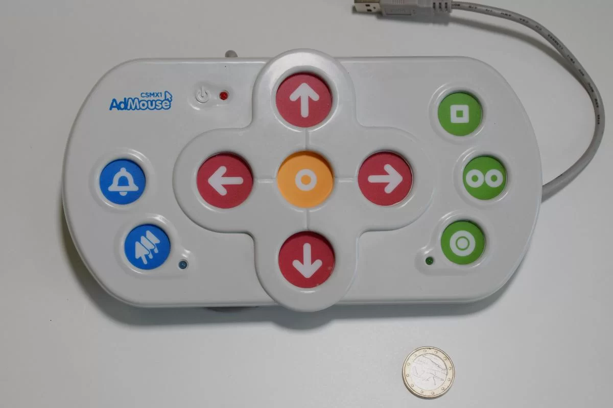

Presentación
Admouse, el ratón diseñado para personas con dificultades motoras, fue creado en el 2018 en Argentina por la empresa SCA Industrial. Este permite emular el funcionamiento de un ratón común a personas con Parkinson, distonías, accidentes cerebrovasculares o tics nerviosos.
Además es un dispositivo "PLUG AND PLAY" , lo que se resume en que no necesita la instalación de un software complementario y lo hace compatible con la gran mayoría de los ordenadores.
Beneficios
El ratón Admouse está formado por una serie de botones que recrean los botones y los movimientos que se pueden realizar con un mouse común, además posee funciones especiales como la posibilidad de acelerar el movimiento del cursor, la retención de clic, un botón de doble clic y un botón para solicitar asistencia.
El dispositivo se diseñó con botones de bajo relieve para evitar pulsaciones involuntarias y una distribución de teclas con colores de alto contraste para un uso sencillo e intuitivo.
Avances

El ratón Admouse surge como una variante al mouse común debido a que una serie de personas no podían usar el ratón que todos conocemos. Este permite mediante un sistema de botones muy intuitivo que personas con ciertas enfermedades o incapacidades puedan utilizar un ratón de forma sencilla. Admouse recientemente saco una nueva variante de su versión original en la que añadía también al ratón un joystick que supone una mayor facilidad de movilidad.